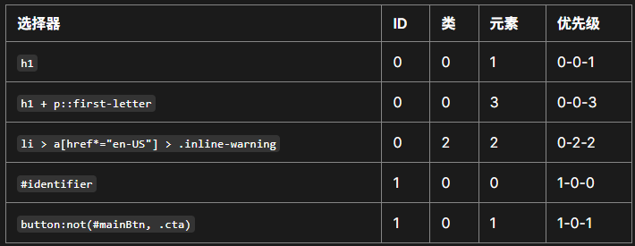

理解继承¶
我们从继承开始。下面的例子中我们有一个 <ul> 元素，里面有两个无序列表。我们已经给 <ul> 设置了边框（border）、内边距（padding）和字体颜色。
color 属性是一个继承属性。因此，color 属性应用在直接子元素和其后代——直接子元素 <li> 和第一个嵌套列表中的子项。然后添加了一个 special 类到第二个嵌套列表，其中使用了不同的颜色。然后通过它的子元素继承。
<ul class="main">
<li>项目 1</li>
<li>
项目 2
<ul>
<li>2.1</li>
<li>2.2</li>
</ul>
</li>
<li>
项目 3
<ul class="special">
<li>
3.1
<ul>
<li>3.1.1</li>
<li>3.1.2</li>
</ul>
</li>
<li>3.2</li>
</ul>
</li>
</ul>.main {
color: rebeccapurple;
border: 2px solid #ccc;
padding: 1em;
}
.special {
color: black;
font-weight: bold;
}- 项目 1
-
项目 2
- 2.1
- 2.2
-
项目 3
-
3.1
- 3.1.1
- 3.1.2
- 3.2
-
3.1
控制继承¶
CSS 为控制继承提供了五个特殊的通用属性值。每个 CSS 属性都接收这些值。- inherit
- 设置该属性会使子元素属性和父元素相同。实际上，就是“开启继承”。
- initial
- 将应用于选定元素的属性值设置为该属性的初始值。
- revert
- 将应用于选定元素的属性值重置为浏览器的默认样式，而不是应用于该属性的默认值。在许多情况下，此值的作用类似于 unset。
- revert-layer
- 将应用于选定元素的属性值重置为在上一个层叠层中建立的值。
- unset
- 将属性重置为自然值，也就是如果属性是自然继承那么就是 inherit，否则和 initial 一样。
<ul>
<li>默认<a href="#">链接</a>颜色</li>
<li class="my-class-1">继承<a href="#">链接</a>颜色</li>
<li class="my-class-2">重置<a href="#">链接</a>颜色</li>
<li class="my-class-3">取消<a href="#">链接</a>颜色的设置</li>
</ul>body {
color: green;
}
.my-class-1 a {
color: inherit;
}
.my-class-2 a {
color: initial;
}
.my-class-3 a {
color: unset;
} 重设所有属性值¶
CSS 的简写属性 all 可以用于同时将这些继承值中的一个应用于（几乎）所有属性。它的值可以是其中任意一个（inherit、initial、unset 或 revert）。这是一种撤销对样式所做更改的简便方法，以便回到之前已知的起点。
下面的示例中有两个块级引用元素。第一个用元素本身的样式，第二个设置 all 为 unset
<blockquote>
<p>当前块引用设置了样式</p>
</blockquote>
<blockquote class="fix-this">
<p>当前块引用未设置样式</p>
</blockquote>blockquote {
background-color: orange;
border: 2px solid blue;
}
.fix-this {
all: unset;
}当前块引用设置了样式
当前块引用未设置样式
理解层叠¶
我们现在明白了为什么嵌套在 HTML 结构中的段落和应用于正文中的 CSS 颜色相同，从入门课程中，我们了解了如何将文档中的任何修改应用于某个对象的 CSS，无论是把 CSS 指定某个元素还是创建一个类。现在，我们将要了解层叠如何定义在不止一个元素的时候怎么应用 CSS 规则。
有三个因素需要考虑，根据重要性排序如下，后面的更重要：
- 资源顺序
- 优先级
- 重要程度
资源顺序
我们已经看到了顺序对于层叠的重要性。如果你有超过一条规则，而且都是相同的权重，那么最后面的规则会应用。可以理解为后面的规则覆盖前面的规则，直到最后一个开始设置样式。
资源顺序仅在规则的优先级相同时才体现出来，下面让我们看一下优先级：
优先级
你会发现在一些情况下，有些规则在最后出现，但是却应用了前面的具有冲突的规则。这是因为前面的有更高的优先级——它范围更小，因此浏览器就把它选择为元素的样式。
就像前面看到的，类选择器的权重大于元素选择器，因此类上定义的属性将覆盖应用于元素上的属性。
这里需要注意虽然我们考虑的是选择器，以及应用在选中对象上的规则，但不会覆盖所有规则，只覆盖相同的属性。
这样可以避免重复的 CSS。 一种常见的做法是给基本元素定义通用样式，然后给不同的元素创建对应的类。 举个例子，在下面的样式中我给 2 级标题定义了通用样式，然后创建了一些类只修改部分属性的值。 最初定义的值应用于所有标题，然后更具体的值通过对应类来实现。
<h2>未设置类的标题</h2>
<h2 class="small">设置了 small 类的标题</h2>
<h2 class="bright">设置了 bright 类的标题</h2>h2 {
font-size: 2em;
color: #000;
font-family: Georgia, "Times New Roman", Times, serif;
}
.small {
font-size: 1em;
}
.bright {
color: rebeccapurple;
} 未设置类的标题
设置了 small 类的标题
设置了 bright 类的标题
内联样式
内联样式，即 style 属性内的样式声明，优先于所有普通的样式，无论其优先级如何。这样的声明没有选择器，但它们的优先级可以理解为 1-0-0-0；即无论选择器中有多少个 ID，它总是比其他任何优先级的权重都要高。
!important
有一个特殊的 CSS 可以用来覆盖所有上面所有优先级计算，不过需要很小心的使用——!important。用于修改特定属性的值，能够覆盖普通规则的层叠。
备注： 了解
!important是为了在阅读别人代码的时候知道有什么作用。但是，强烈建议除了非常情况不要使用它。!important改变了层叠的常规工作方式，它会使调试 CSS 问题非常困难，特别是在大型样式表中。在一种情况下，你可能不得不使用它：当你不能编辑核心的 CSS 模块，不能用任何其他方式覆盖，而你又真的想要覆盖一个样式时。但说真的，如果可以避免的话就不要用它。
覆盖
!important唯一的办法就是另一个!important具有相同优先级而且顺序靠后，或者更高优先级。
优先级¶
现在让我们来看看浏览器如何计算优先级。我们已经知道一个元素选择器比类选择器的优先级更低，会被其覆盖。本质上，不同类型的选择器有不同的分数值，把这些分数相加就得到特定选择器的权重，然后就可以进行匹配。
一个选择器的优先级可以说是由三个不同的值（或分量）相加，可以认为是百（ID）十（类）个（元素）——三位数的三个位数：
- 百位：ID 选择器
- 十位：类选择器、属性选择器、伪类
- 个位：元素选择器、伪元素选择器
下面有几个单独的例子，有空可以看看。试着思考下，理解为什么优先级是这样定的。我们还没有深入介绍选择器，不过你可以在 MDN 的选择器参考页面找到每个选择器的详细信息。
相互冲突的声明将按以下顺序应用，后一种声明将覆盖前一种声明：
- 用户代理样式表中的声明（例如，浏览器的默认样式，在没有设置其他样式时使用）。
- 用户样式表中的常规声明（由用户设置的自定义样式）。
- 作者样式表中的常规声明（这些是我们 web 开发人员设置的样式）。
- 作者样式表中的 !important 声明
- 用户样式表中的 !important 声明
- 用户代理样式表中的 !important 声明
- HTML
- 超文本标记语言，用于构建网页结构。
- CSS
- 层叠样式表，用于美化网页。
- JavaScript
- 一种编程语言，使网页具有交互性。
- HTML
- 超文本标记语言，用于构建网页结构。
- CSS
- 层叠样式表，用于美化网页。
- JavaScript
- 一种编程语言，使网页具有交互性。